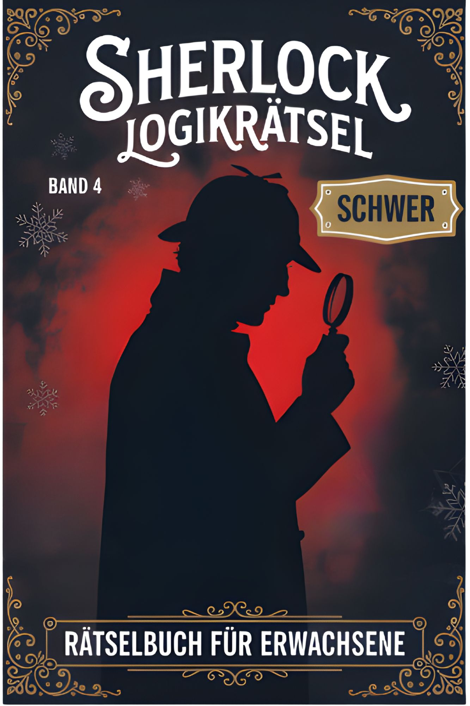

Dein Fallbuch
0 von 20 gelöst
Als Nächstes: Fall 1 · Die Spur im Frost
Der digitale Ermittlungsbegleiter
Behalte deinen Buchfortschritt im Blick und löse zusätzlich immer neue, eindeutig geprüfte Bonusfälle auf dem interaktiven Ermittlungsbrett.

Zum Buch bei AmazonDein Fallbuch
Als Nächstes: Fall 1 · Die Spur im Frost
Bonus-Rätsel
Vier textbasierte Ebenen. Jede Lösung öffnet den nächsten, logisch zwingenden Ermittlungsschritt.
Buch ↔ App
Öffne in der App „Buchfälle“ und wähle dieselbe Fallnummer.
Markiere den Fall als gelöst. Die App merkt sich deinen Stand auf diesem Gerät.
Öffne „Bonusfall“ für eine zusätzliche schwere Ermittlung in vier aufeinander aufbauenden Ebenen.
Buchbegleiter · Fälle 1–20
Die Seitenangaben führen direkt zur Aufgabe und zum ausführlichen Lösungsweg in „Sherlock Logikrätsel – Band 4: Schwer“.
Bonus-Rätsel · Schwer · Vier Ebenen
Textbasiert, ohne Tabelle und ohne visuelle Lösungstricks. Löse jede Ebene eindeutig, bevor die nächste Spur geöffnet wird.
Bonus-Akte NACHTZUG-01
Antworten und ausführlicher Lösungsweg
Einmal hinzufügen, jederzeit öffnen
So fühlt sich der Buchbegleiter wie eine eigene App an und bleibt nach dem ersten Laden auch ohne Internet verfügbar.
Wenn dein Browser die direkte Installation unterstützt, erscheint hier der Installationsknopf.
Lokale Sicherung
Deine Daten bleiben nur auf diesem Gerät. Kopiere den Sicherungscode, wenn du Browserdaten löschst oder das Gerät wechselst.